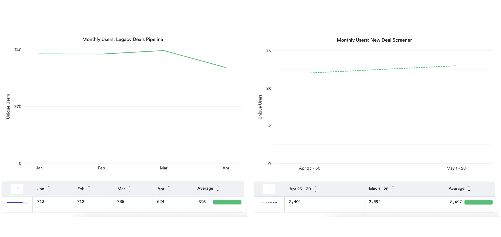

Key Results & Data Analysis

Deal Screener Key Results
Objective:
- Increase monthly users by 50% from about 700 to 1,050.
Key Result:
- Monthly users increased from about 700 to 2,500, resulting in a 257% increase.
Watchlist Adoption Analysis
Insight:
- Discovered that ~80% of users had not set up a watchlist, signaling low engagement with a key feature.
Hypotheses:
- Feature was not easily discoverable.
- Feature was not well integrated into daily workflows.
Action Taken:
- Integrated the watchlist into key tools like the Deal Screener, increasing visibility and making it relevant to users' workflows.
Subscriptions & Website Usage
Insight:
- Identified a negative correlation between the number of email subscriptions and overall website usage.
Hypotheses:
- Clients rely heavily on email alerts, reducing the need to visit the website.
- Email overload causes users to tune out and disengage.
Action Taken:
- Validated both hypotheses through customer interviews, confirming the need for change.
- Sparked strategic discussions on how to make the website more compelling for email-first users.
- Initiated product exploration to better manage email volume and improve targeting.